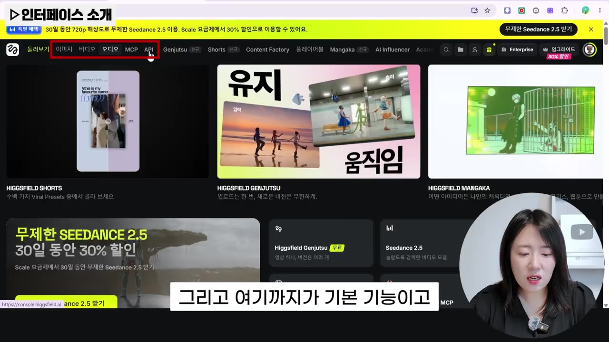
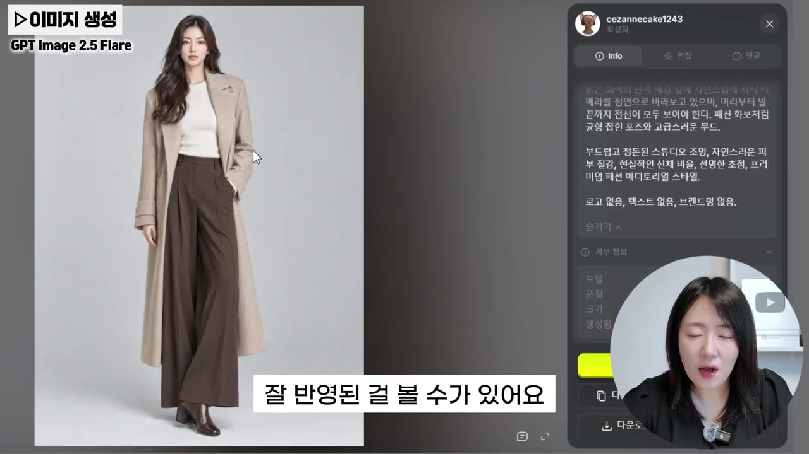
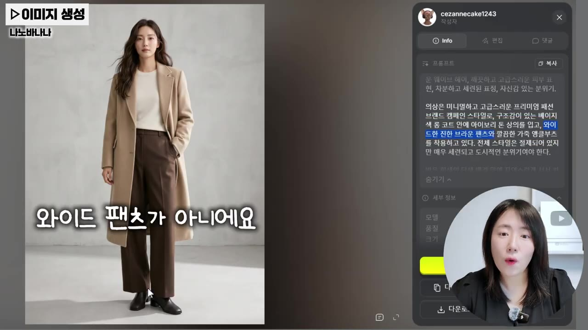
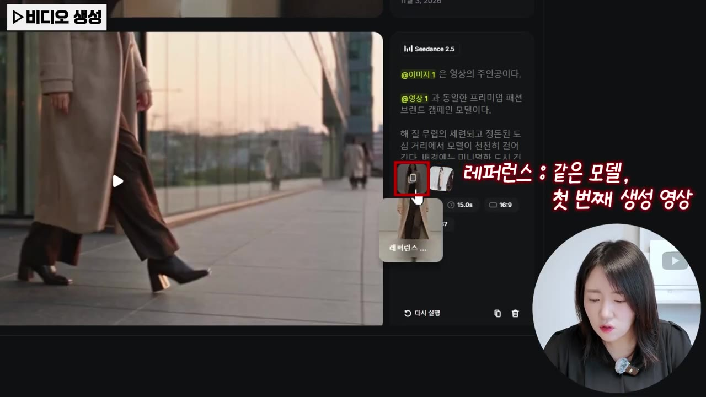
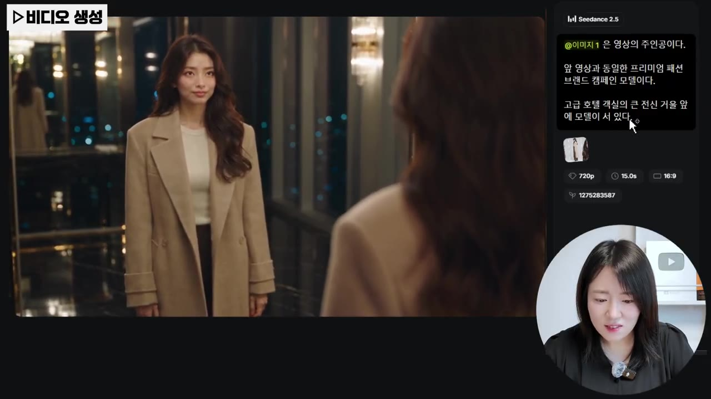

AI 영상, 이렇게 만드세요｜힉스필드 이미지 생성부터 영상 제작까지
▶ 원본 영상 보기한눈에 보기
- 힉스필드(Higgsfield) 한 곳에서 이미지 생성(GPT Image 2.5) → 캐릭터 시트 → 영상 생성(Seedance 2.5)까지 이어서 만들 수 있다.
- 가상 모델의 전신 이미지를 먼저 만들고, 캐릭터 시트를 레퍼런스로 넣으면 영상에서도 얼굴·의상이 일관되게 유지된다.
- 같은 캐릭터로 도심 거리·호텔 라운지·영화 장면 등 여러 버전의 광고 영상을 만들 수 있다.
- Genjutsu 기능은 기존 인기 영상의 주인공 얼굴을 내 모델 얼굴로 바꿔 준다(얼굴 확대 이미지를 넣어야 잘 바뀜).
- 영상에서는 플러스 요금제를 추천하며, 시청자 링크로 첫 구매 시 최대 50% 할인(영상 속 주장, 조건은 이용 시점에 따라 다름)을 안내한다.
이런 분께 도움이 됩니다
- AI 영상 제작이 처음이라 이미지 → 영상 흐름을 한 번에 익히고 싶은 분
- 가상 모델로 광고·패션 영상을 만들고 싶은 마케터, 부업·콘텐츠 제작자
핵심 내용
힉스필드 화면 구성과 모델 선택
- 상단 메뉴는 이미지·비디오·오디오(보이스)가 기본 도구이고, 오른쪽 메뉴는 영상을 더 쉽게 만드는 부가 기능이다. (0:38)
- 이미지 화면: 왼쪽은 기능(시네마틱 카메라, 캔버스, 소울, 무드모드 등), 오른쪽은 모델(GPT Image, Nano Banana, Flux 등).
- 비디오 화면: 모델(Seedance 2.5, Kling 등)과 영상 보정 기능이 따로 있다.
- 모델 = 생성에 쓸 AI를 고르는 것. 모델마다 특징이 달라 한 플랫폼에서 바꿔 쓰는 편이 효율적이다.
💡 각각 따로 구독하기보다 한 플랫폼에서 모델을 갈아 끼우는 게 업무에 유리하다는 게 영상의 입장.

GPT Image 2.5 vs Nano Banana
- GPT Image 2.5의 특징은 입력한 프롬프트를 정확히 반영하는 것. 베이지 롱코트, 아이보리 상의, 와이드 팬츠, 웨이브 헤어, 질감까지 잘 표현됐다. (5:15)
- 크레딧 소모는 약 2.75로 적다.
- 같은 프롬프트를 Nano Banana 2.1로 만들면 분위기는 비슷하나 와이드 팬츠 요청이 반영되지 않았고 전체적으로 덜 세련됐다. (6:40)
- 진행자는 이미지 생성에는 GPT Image 2.5를 더 많이 쓴다고 했다. 직접 비교해 보고 고르라는 조언.
- 영상 모델도 모델별 특징이 있다고 언급.


일관성을 지키는 방법 (캐릭터 시트)
- 캐릭터 시트 = 한 인물의 정면·옆모습·클로즈업 등 여러 각도 이미지를 모은 것. (7:19)
- 이것을 영상 레퍼런스로 쓰면 얼굴이 일관되게 유지된다.
- 전신 이미지는 얼굴이 작게 나오므로 클로즈업을 따로 만들어 두는 게 도움이 된다.
- 영상용 이미지는 전신으로 만들 것. 상반신만 있으면 하반신을 AI가 마음대로 표현한다. (6:05)
💡 얼굴·헤어·의상·색상·체형을 "완전히 동일하게 유지"하라고 프롬프트에 명시한다.
영상 설정과 결과
- Seedance 2.5 설정: 길이(영상에서는 15초), 화면비(16:9), 품질(모델별 4K/1080 등). 길이·품질이 올라가면 크레딧과 생성 시간이 늘어난다. (11:28)
- 사운드를 켜 두면 배경음·효과음이 자동 생성된다.
- 결과: 얼굴·표정·옷이 그대로 유지된 채 걸어 나오는 영상이 생성됐다. 마음에 안 들면 프롬프트를 수정해 재생성한다.
- 변형 예시: 첫 영상을 레퍼런스에 추가해 도심 거리·호텔 라운지(배경음도 달라짐)·영화 같은 장면을 만들었다. 같은 모델·복장에 배경과 표정·앵글만 바뀐다. (13:03)


Genjutsu 기능
- 인기 영상 템플릿을 고르고 '다시 만들기'를 누른 뒤 내 얼굴 이미지를 첨부하면 주인공 얼굴이 바뀐다. (14:10)
- 전신 이미지를 넣으면 원본과 얼굴이 별로 안 바뀌었고, 얼굴을 확대한 이미지를 넣자 더 비슷하게 나왔다.
- 전신 영상이면 전신, 얼굴 위주 영상이면 얼굴 위주 이미지를 넣는 게 좋다.
요금제
- 개인 요금제: 스타터 / 플러스 / 울트라 등. 영상은 플러스를 추천. (16:01)
- 플러스 연간 결제 시 47달러(월 기준 여부는 자막상 불분명). Seedance 2.5 기준 영상 1개당 약 1달러.
- 스타터에서는 Seedance 2.5를 쓸 수 없다. 울트라는 크레딧이 더 많다.
- 결제 직후 일주일간 일부 기능 무제한 이용 혜택. 신규는 영상 링크로 첫 구매 최대 50% 할인, 쿠폰 코드 "온선"(항상 있는 혜택은 아님).
따라 해보기
준비물
- 힉스필드 계정(구글 로그인 가능). Seedance 2.5는 스타터에서 불가 → 플러스 이상 필요(영상 주장). 유료.
- 프롬프트 모음: 설명란 Notion 링크.
- 소요 시간: 영상 시연 기준 10분 안팎(영상 주장).
단계별 방법
🔁 AI 모델 영상 제작 순서
- 캐릭터 이미지 생성
- 캐릭터 시트 생성
- 영상 설정
- 옵션 지정
- 재생성·변형
- 1캐릭터 이미지 생성
이미지 메뉴에서 GPT Image 2.5 선택, 전신·의상·분위기를 구체적으로 적어 생성 (2:35)
- 2캐릭터 시트 생성
1번 이미지를 레퍼런스(+)로 첨부, 정면·옆모습·클로즈업, 얼굴·헤어·의상·체형 동일 유지, 회색 단색 배경 요청 (7:19)
- 3영상 설정
비디오 메뉴에서 Seedance 2.5 선택, 프롬프트에 "이미지 1은 주인공, 천천히 걸어온다" 입력 후 @(골뱅이)로 캐릭터 시트 지정 (9:50)
- 4옵션 지정
길이 15초, 비율 16:9, 품질, 사운드 켬/끔 설정 후 생성
- 5재생성·변형
마음에 들면 다운로드, 아니면 프롬프트 수정. 첫 영상을 레퍼런스로 넣고 장소(도심·호텔 등) 변경
1단계에 입력할 내용(요지)
27세 한국인 여성 패션 광고 모델의 사실적인 전신 사진
(헤어스타일, 피부, 분위기, 의상, 조명, 비율, 초점, 로고/브랜드명 여부, 세련되고 도시적인 스타일 명시)
원문 프롬프트는 설명란 Notion 링크에 있음(영상에서 전문은 낭독되지 않음).
따라 할 수 있는지 점검
- ✅ 바로 따라 할 수 있음: 메뉴 위치, 모델 선택, 레퍼런스 첨부(+), @ 지정, 길이·비율 설정, 재생성.
- ⚠️ 1단계 「캐릭터 이미지 생성」: 프롬프트 전문이 영상에 없음 → 설명란 Notion 링크에서 복사.
- ⚠️ 3단계 「영상 설정」: Seedance 2.5는 스타터에서 사용 불가 → 플러스 이상 결제 필요.
- ⚠️ 가격·크레딧: 영상 촬영 시점 기준이며 변경될 수 있음 → 공식 요금제 페이지에서 확인.
- ❓ 플러스 47달러가 월 요금인지(연간 결제 시 월 환산인지) 명확하지 않음 → 결제 화면 확인.
확인 방법
- 생성된 영상에서 얼굴·의상이 캐릭터 시트와 같은지 확인.
막히면
- 영상용 이미지는 반드시 전신으로 (하반신이 임의 생성됨).
- Genjutsu에서 얼굴이 안 바뀌면 얼굴 확대 이미지를 사용.
- 같은 프롬프트라도 결과는 달라질 수 있으니 조금씩 수정(설명란 안내).
기억할 숫자·인용
- GPT Image 2.5 이미지 1장 약 2.75 크레딧
- Seedance 2.5 영상 1개 약 1달러(플러스 기준, 영상 주장)
- 플러스 연간 결제 47달러, 신규 첫 구매 최대 50% 할인, 쿠폰 "온선"
- AI 영상 생성기 시장: 연 약 20% 성장, 2033년까지 4배 성장 전망(영상 주장, 출처 미언급)
생각해볼 점
- 채널이 제휴 링크·할인 코드를 소개하는 영상이므로 플랫폼 추천은 홍보 성격이 있다.
- 실제 인물 얼굴을 바꾸는 Genjutsu 류 기능은 초상권·딥페이크 이슈가 있어 사용 범위를 확인해야 한다.
- AI 모델 광고물에는 AI 생성 표기 의무가 있을 수 있어 플랫폼·국가 규정을 확인해야 한다(영상 외 내 의견).
바로 해볼 일
- 설명란 Notion 링크에서 프롬프트를 복사해 GPT Image 2.5로 전신 모델 이미지 1장 만들기
- 그 이미지로 캐릭터 시트를 만들어 보기
- 요금제·크레딧 조건을 공식 페이지에서 확인한 뒤 Seedance 2.5 결제 여부 결정